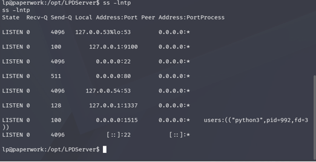
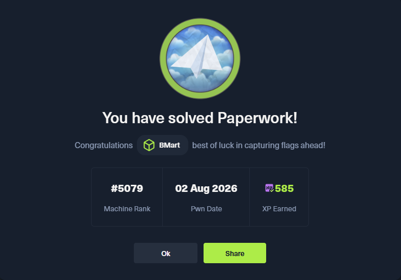

Project Overview
Completed an authorized security assessment of the retired Hack The Box Paperwork machine. The assessment included external service enumeration, web application analysis, custom protocol testing, Python source-code review, command-injection validation, internal service discovery, lateral movement, and Linux privilege-escalation analysis.
The assessment demonstrated how weaknesses across multiple services could be chained together to progress from unauthenticated network access to a low-privileged service account, a standard Linux user, and ultimately administrative access.
Flags, passwords, SSH keys, target addresses, VPN addresses, and other sensitive lab values have been intentionally omitted.
Environment and Tools
- Hack The Box retired Paperwork machine
- Kali Linux running in Oracle VirtualBox
- HTB OpenVPN lab connection
- Nmap for network and service enumeration
- Firefox for web application analysis
- Python 3 for protocol testing and socket communication
- Netcat for connectivity testing and controlled callbacks
- SSH for authenticated lateral movement
- Linux process and socket enumeration tools
- Static Python source-code review
Assessment Methodology
1. Network Enumeration
Performed an initial TCP service scan to identify externally accessible services and establish the target's attack surface.
nmap -Pn -sC -sV <TARGET_IP>The initial scan identified:
- SSH on TCP port 22
- HTTP on TCP port 80
A full TCP port scan identified an additional custom service on TCP port 1515:
nmap -Pn -p- --min-rate 1000 <TARGET_IP>The unusual port was recorded for further service identification rather than being trusted solely based on Nmap's default service label.
2. Web Application Analysis
Reviewed the web application hosted on port 80 and identified references
to a document-archiving service, RFC 1179, and a print queue named
archive_intake.
RFC 1179 describes the Line Printer Daemon protocol. This information, combined with the custom service on TCP port 1515, suggested that the application exposed a nonstandard LPD implementation.
The website also provided a downloadable archive containing source code for the document processor.
3. Archive and Source-Code Inspection
Treated the downloaded archive as untrusted and inspected it without executing its contents.
file paperwork-archive.zip
sha256sum paperwork-archive.zip
unzip -l paperwork-archive.zipThe archive contained a Python server implementation. The source was extracted into a dedicated directory and reviewed with line numbers:
unzip paperwork-archive.zip -d processor-src
nl -ba processor-src/server.pyThe review traced network-controlled data from an LPD job-name field to a shell command executed through:
subprocess.Popen(..., shell=True)The submitted job name was inserted into the command without adequate validation, escaping, or safe argument separation.
4. Command-Injection Validation
First submitted a normal test job to confirm the expected protocol sequence and queue behavior. A controlled callback was then used to validate command execution without modifying important files.
Successful validation demonstrated that attacker-controlled content in
the LPD J job-name field reached the system shell.
The final payload and callback details are intentionally omitted from this public portfolio.
A reverse shell was obtained as the low-privileged
lpd service account.
5. Internal Service Discovery

Enumerated running processes and listening sockets from the obtained service account:
ps -eo user,pid,ppid,cmd --forest
ss -lntp
This revealed a Python printer-redirection service running as the
archivist user and listening only on:
127.0.0.1:9100Because the service was bound to the loopback interface, it was not visible during external Nmap enumeration. It became accessible only after obtaining a shell on the target.
6. PJL Path Traversal and Lateral Movement
The internal printer service accepted Printer Job Language commands for filesystem operations. Testing identified insufficient path normalization in the virtual printer storage implementation.
Directory traversal sequences could escape the intended printer
directory. The file-download operation could then write a supplied file
into the archivist user's SSH configuration.
A temporary SSH public key was written to the user's
authorized_keys file. The associated private key was used to
authenticate locally as archivist.
All key material has been excluded from this portfolio.
7. Root-Owned Management Daemon Analysis
After obtaining the archivist account, further enumeration
identified a root-owned management daemon and a UNIX domain socket:
/run/paperwork/mgmt.sock
The socket was accessible to the archivist group. The daemon
was implemented as a readable Python script, allowing its authentication,
logging, and incident-response behavior to be reviewed directly.
The daemon monitored printer logs for selected filesystem-related PJL commands. When suspicious activity was detected, it entered a forensic lockdown path and sent open file descriptors to the connected socket client.
8. UNIX File-Descriptor Exposure
The daemon transferred file descriptors using the UNIX socket
SCM_RIGHTS mechanism. One transferred descriptor referenced
a root-only configuration file containing an administrative secret.
Although the file itself was protected by restrictive filesystem permissions, the privileged daemon had already opened it. Passing the open descriptor to an unprivileged client bypassed the original access restriction.
The administrative credential was recovered from the transferred descriptor and used to validate root access within the authorized lab. The credential and root flag are not included in this portfolio.

Security Findings
Finding 1: OS Command Injection in the LPD Service
Severity: Critical
Network-controlled job-name data was incorporated into a command executed
with shell=True. An unauthenticated attacker could inject
operating-system commands and obtain access using the service account's
permissions.
Finding 2: Exposed Application Source Code
Severity: High
The web application provided downloadable source code for the custom document processor. The code disclosed protocol behavior, queue details, validation logic, internal service ports, and the vulnerable command execution path.
Finding 3: Improper Path Validation in the Printer Service
Severity: Critical
The internal printer service did not securely normalize or restrict filesystem paths. Directory traversal sequences allowed file operations outside the intended printer storage directory.
Finding 4: Arbitrary File Write as Another User
Severity: Critical
The printer service ran as the archivist user and allowed
attacker-controlled files to be written into that user's home directory.
Writing an SSH authorized_keys file enabled lateral movement
from the service account to the standard user.
Finding 5: Insecure UNIX File-Descriptor Transfer
Severity: Critical
The root-owned management daemon transferred open file descriptors for
sensitive files to a lower-privileged client through
SCM_RIGHTS. This exposed a root-only administrative secret
despite restrictive filesystem permissions.
Finding 6: Excessive Trust Across Service Boundaries
Severity: High
Multiple services operated under different user accounts but trusted unvalidated input from adjacent components. This allowed weaknesses in the public LPD service, internal printer service, and privileged management daemon to be chained into full system compromise.
Remediation Recommendations
-
Remove
shell=Trueand execute required programs through a fixed argument list that does not invoke a command shell. - Apply strict allow-list validation to LPD queue names, job names, control-file fields, and all other network-controlled values.
- Do not publish production service source code or internal implementation archives through the public web application.
- Canonicalize filesystem paths before use and verify that resolved paths remain inside the permitted storage directory.
- Reject absolute paths, parent-directory traversal sequences, and unexpected drive or volume identifiers.
- Run internal printer services under a dedicated account that does not own interactive user home directories or SSH configuration.
-
Prevent application services from writing to
~/.ssh, shell configuration files, scheduled-task locations, and other security-sensitive paths. - Restrict management-socket access to the smallest necessary set of accounts and verify peer credentials before serving requests.
- Never transfer privileged file descriptors to untrusted clients. Return only sanitized data required for the management operation.
- Store administrative secrets in a dedicated secrets-management system rather than a plaintext configuration file.
- Rotate credentials exposed by the affected daemon and review access logs for previous unauthorized use.
- Apply least privilege and clear trust boundaries between web, printing, archival, and administrative components.
Skills Demonstrated
- TCP service enumeration and attack-surface analysis
- Full-port scanning and unusual-service identification
- Web application reconnaissance
- Safe inspection of untrusted archives
- Python source-code review
- Untrusted-input source-to-sink analysis
- OS command-injection identification and validation
- Custom LPD protocol testing
- Linux process and socket enumeration
- Loopback-only service discovery
- PJL filesystem operation analysis
- Path traversal and arbitrary file-write testing
- SSH key-based lateral movement
- UNIX domain socket analysis
- Linux file-descriptor and SCM_RIGHTS analysis
- Privilege-escalation validation
- Risk assessment and remediation documentation
Key Takeaways
- Source-code review can reveal vulnerabilities and internal service relationships that are not visible through network scanning alone.
- Untrusted input should never be inserted into a command executed by a system shell.
- Loopback-only services still require secure authentication, path validation, and least-privilege controls.
- Filesystem permissions cannot protect a sensitive file after a privileged process transfers its open file descriptor to another process.
- Individually isolated weaknesses can become critical when services trust one another across account and privilege boundaries.
- Effective security assessments connect technical findings to business impact and practical remediation.